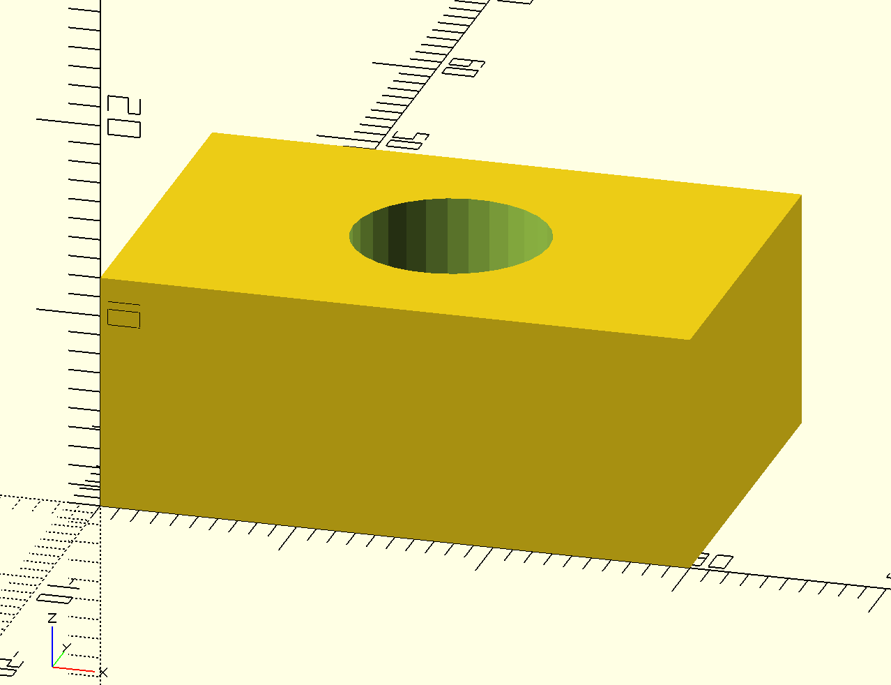

4차시 🕳️
실습1

difference() {
cube([30, 20, 12]);
translate([15, 10, -1]) // 살짝 더 아래에서 시작
cylinder(h=14, r=5, $fn=30); // 높이도 12보다 여유 있게!
}
// 큐브 높이(12)보다 조금 더 길게(14) 여유를 주면
// 확실하게 완전히 뚫려요 — 이 여유를 tolerance(공차)라고 해요

difference() {
cube([30, 20, 12]);
translate([15, 10, -1]) // 살짝 더 아래에서 시작
cylinder(h=14, r=5, $fn=30); // 높이도 12보다 여유 있게!
}
// 큐브 높이(12)보다 조금 더 길게(14) 여유를 주면
// 확실하게 완전히 뚫려요 — 이 여유를 tolerance(공차)라고 해요